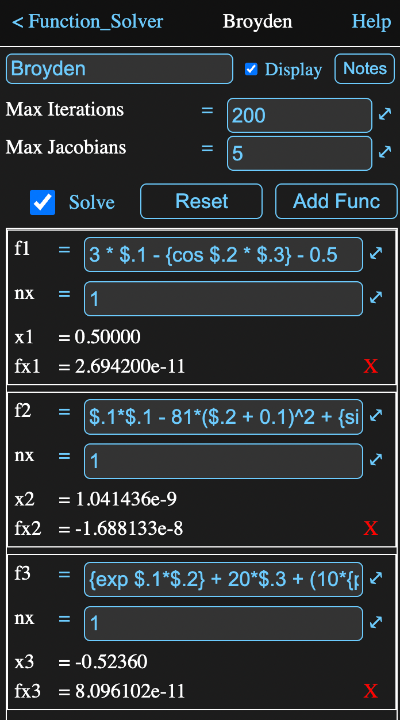

The function solver tool modifies one or more output values until the function values calculated from those outputs are zero. That is, it attempts to find x values that satisfy one or more functions of the form:
f(x) = 0
where each x can be either a scalar or an array.
The starting value for every x is 0 and normally the solution should fall into the range of -1.0 to 1.0. The output x values are available as parameter 1 for the first function, 2 for the second and so on.
You access these solver parameters in formulas in your calculation and convert them as necessary.
For example if the solver tool's name was just "solver" and it had multiple functions, the second of which represented the speed of a car, you might first use an expression named "speed" with a formula:
(solver.2 + 100) * 1 kph
to convert the dimensionless starting point to 100 kph.
The equation solver will repeatedly try different values for x until all the values of all the functions equate to 0.
If there is a single scalar equation, then the Brent method is used and the output value is limited to the range -1 to 1 (the function calculation can of course scale that to anything).
If it is a multi value problem, then the Broyden method is used. In this case the output values can move outside the -1 to 1 range, but it is still good practice to scale the problem so all values are approximately normalized.
Below is an image of the information view of a solver being used to solver the classic Broyden test problem. This is a bit unusual in that the entire problem is contained in the single tool, without reference to other tools.
The fields are:
The maximum number of iterations that will be attempted before the solver abandons its attempt with a warning..
For a multiple value problem, you can also specify maximum number of iterations per jacobian reevaluation. This is ignored for a single value problem.
The defaults will almost always be appropriate.
The solve box determines whether the solver should attempt to find a solution. When it is checked, the solver will automatically run when one of its outputs is requested after one of its inputs has changed.
Tapping this button will reset the output parameter values to 0 and uncheck the solve enable box.
This is used to add additional functions to the solver, which will add a row to the function list below.
The table at the bottom of the view has a definition for each function added to the solver. Each definition has the following elements:
$.1
refers to the x1. In most cases the formulas will be referencing other tools that have performed calculations on the solvers x values.
Parameters that can be accessed in the form a.b where a is the object and b is the parameter